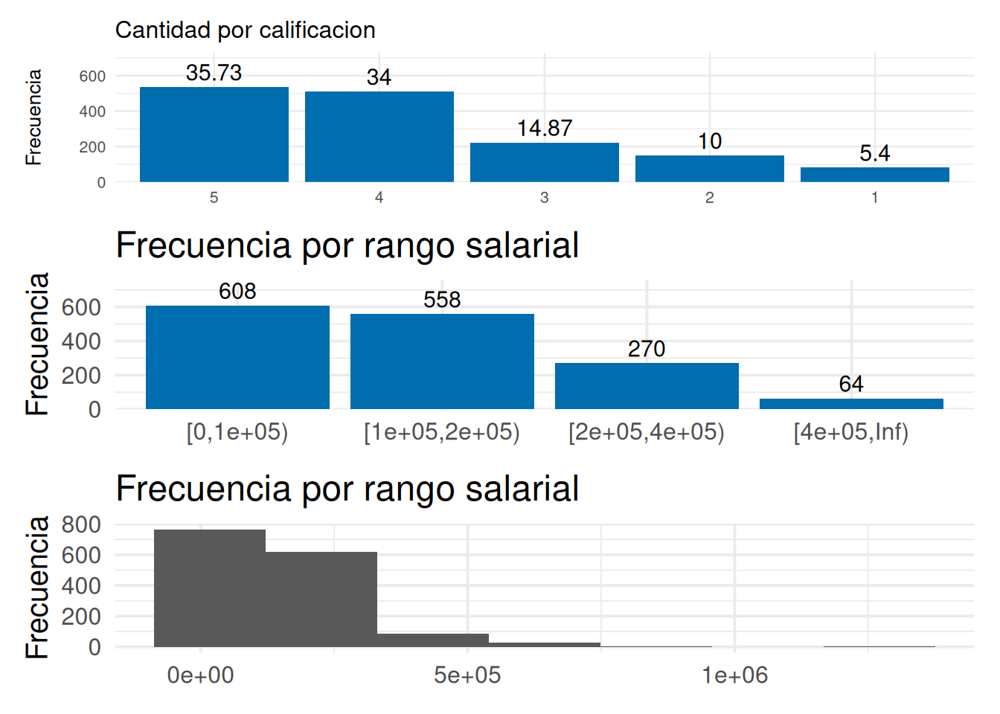
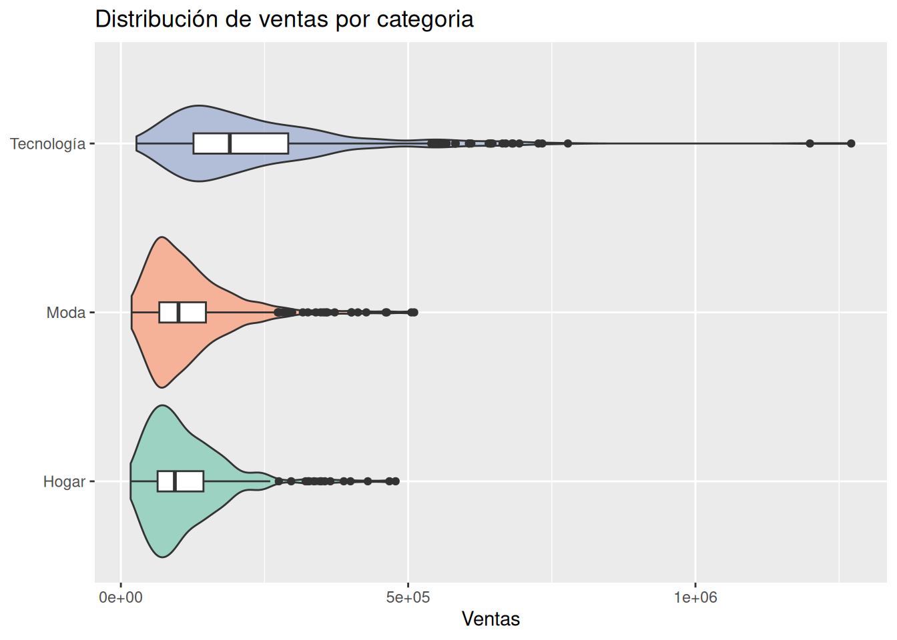
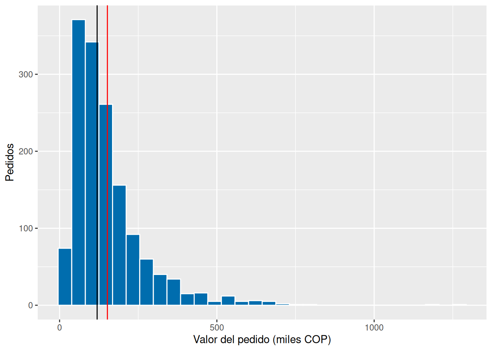
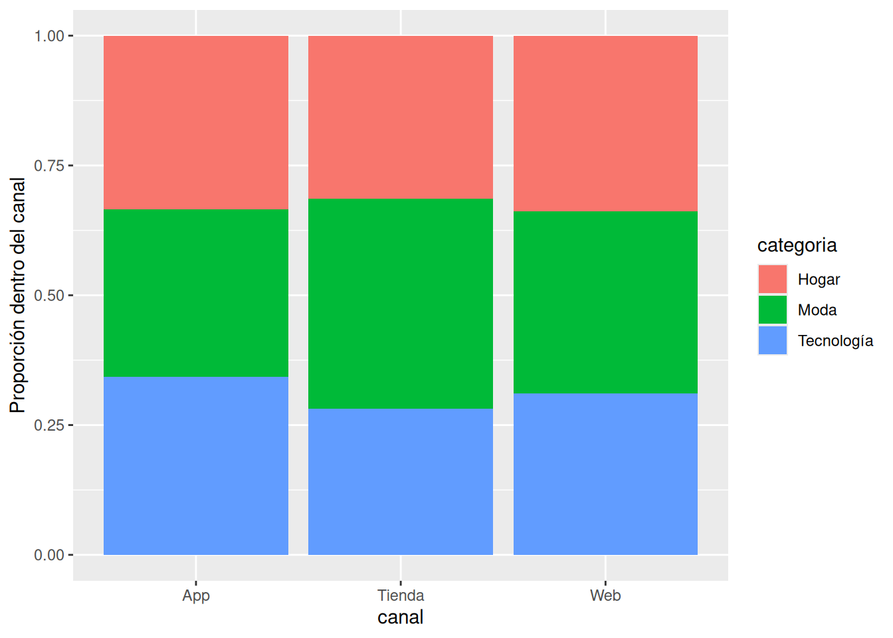

valor_pedido <- pedidos |>mutate(rango =cut(valor, c(0, 1e5, 2e5, 4e5, Inf), right =FALSE)) |>count(rango) |>mutate(pct =100* n /sum(n), acum =cumsum(pct))valor_pedido
# A tibble: 4 × 4
rango n pct acum
<fct> <int> <dbl> <dbl>
1 [0,1e+05) 608 40.5 40.5
2 [1e+05,2e+05) 558 37.2 77.7
3 [2e+05,4e+05) 270 18 95.7
4 [4e+05,Inf) 64 4.27 100
summary(pedidos)
fecha canal categoria valor
Min. :2025-01-01 Length:1500 Length:1500 Min. : 17000
1st Qu.:2025-03-30 Class :character Class :character 1st Qu.: 75050
Median :2025-07-01 Mode :character Mode :character Median : 119300
Mean :2025-07-01 Mean : 151927
3rd Qu.:2025-10-02 3rd Qu.: 187100
Max. :2025-12-31 Max. :1271100
dias_entrega calificacion
Min. : 1.000 Min. :1.000
1st Qu.: 3.000 1st Qu.:3.000
Median : 4.000 Median :4.000
Mean : 4.049 Mean :3.847
3rd Qu.: 5.000 3rd Qu.:5.000
Max. :13.000 Max. :5.000
library(patchwork)p1 <- pedidos |>count(calificacion) |>mutate(pct =round(100* n /sum(n),2), acum =cumsum(pct)) |>ggplot(aes(x =reorder(calificacion, -n), y = n)) +geom_col(fill ="#006DAE") +geom_text(aes(label = pct), vjust =-0.4, size =4) +scale_y_continuous(expand =expansion(mult =c(0, 0.12)), limits =c(0, 650)) +labs(title ="Cantidad por calificacion",x =NULL, y ="Frecuencia") +theme_minimal(base_size =10)p2 <- pedidos |>mutate(rango =cut(valor, c(0, 1e5, 2e5, 4e5, Inf), right =FALSE)) |>count(rango) |>ggplot(aes(x =reorder(rango, -n), y = n)) +geom_col(fill ="#006DAE") +geom_text(aes(label = n), vjust =-0.4, size =4) +# scale_x_continuous(label = c("< 1 mill","1-2 mill","2-4 mill","4 mill >")) +scale_y_continuous(expand =expansion(mult =c(0, 0.22)), limits =c(0, 620)) +labs(title ="Frecuencia por rango salarial",x =NULL, y ="Frecuencia") +theme_minimal(base_size =15)p3 <- pedidos |>ggplot(aes(valor)) +geom_histogram(bins =7) +# scale_y_continuous(expand = expansion(mult = c(0, 0.22)), limits = c(0, 620)) +labs(title ="Frecuencia por rango salarial",x =NULL, y ="Frecuencia") +theme_minimal(base_size =15)p1/p2/p3 # lado a lado

¿Qué porcentaje de pedidos tiene calificación de 4 o más? tiene 69.73 \(\%\)
¿Por qué la acumulada tiene sentido para calificacion y no para canal? tiene sentido por calificacion porque se tomaria todas aquellas calificaciones que tuvieron puntuación igual a superior y se sumaria toda estas en un orden especifico, pero si hacemos lo mismo por canal estaria sumando todo sin un orden, dado que la variable es categorica nominal y no ordinal.
Usa cortes de igual ancho: ¿qué intervalo queda casi vacío y por qué? queda casi vacio el rango salarial entre 1 millon dado que este se ubicacion muy pocos datos
Ejercicio 2: elige el gráfico según la pregunta
Para cada pregunta elige el gráfico con el mapa de decisión, constrúyelo en ggplot2 y justifícalo en una frase.
justificación: como los pedidos son los registros de la base datos entonces el conteo de registros por la columna de canal me dice cuantos registros hay en cada uno de los canales.
¿Cómo se distribuyen los días de entrega?
Variable
Gráfico
Decisión
1 variable categorica: dias del mes (12 opciones)
barras apiladas
dado que suma 100% y dice que categoria es mas grande
justificación: como los pedidos son los registros de la base datos entonces el conteo de registros por la columna de dias de entrega me dice cuantos registros hay en cada uno de los dias
¿El valor del pedido cambia según la categoría?
# levels(as.factor(pedidos$categoria))
Variable
Gráfico
Decisión
1 variable categorica: categoria del producto (3 opciones) y 1 variable numerica: valor
Boxplot por grupo
dado que muestra el comportamiento de los precios en cada categoria
ggplot(pedidos, aes(x = valor, y = categoria)) +geom_violin(aes(fill = categoria), alpha =0.6, show.legend =FALSE) +geom_boxplot(width =0.12, fill ="white") +scale_fill_brewer(palette ="Set2") +labs(title ="Distribución de ventas por categoria",x ="Ventas", y =NULL)

justificación: aqui muestra como el valor del pedido cambia segun la categoria se observa que los precios para articulos de tecnologia en general tienen un valor mayor.
—-
¿Cómo evolucionaron las ventas mensuales por canal?
Variable
Gráfico
Decisión
1 variable numerica venta al mes \
1 variable categorica del mes \ 1 variable categorica del canal| grafico de lineas | porque relaciona las tres variables y muestra la evolucion en el mes |
justificación: se observa como evoluciona en cada uno de los canales mensualmente el valor de la venta, se detalla el cambio en cada canal de manera temporal mensual.
Ejercicio 3: la forma del valor del pedido
ggplot(pedidos, aes(x = valor /1000)) +geom_histogram(bins =30, fill ="#006DAE", color ="white") +geom_vline(xintercept =mean(pedidos$valor) /1000, colour ="red") +geom_vline(xintercept =median(pedidos$valor) /1000) +labs(x ="Valor del pedido (miles COP)", y ="Pedidos") # + scale_x_log10()

# Repite con bins = 8 y bins = 120; luego agrega scale_x_log10()
Describe forma, centro y cola.
¿La media es mayor que la mediana? si
¿Qué número de bins muestra mejor la forma? Justifica.
¿Qué cambia con scale_x_log10()? cambia es la escala de la frecuencia de los valores, no es la escala de la variable, sino la forma como se presentan las frecuencias de los valores del precio.
¿Qué medida reportarías a gerencia? Repite por categoria: ¿aparece algo que el histograma global ocultaba?
¿Por qué aquí conviene una paleta divergente? para comparar y que resalten las diferencias
¿Cuál es la referencia? Define colores_canal con nombres y úsalo en dos gráficos distintos.
¿Tus gráficos se entienden sin distinguir rojo y verde? Pruébalos en Coblis.
subirlo a la pagina de Coblis Probar las simulaciones de: - Protanopia (dificultad con el rojo). - Deuteranopia (dificultad con el verde). - Tritanopia (dificultad con el azul). comprobar que las categorías sigan diferenciándose
Ejercicio 5: tabla de contingencia y su gráfico
tabla <-table(pedidos$canal, pedidos$categoria)round(100*prop.table(tabla, margin =1), 1) # % por fila
ggplot(pedidos, aes(x = canal, fill = categoria)) +geom_bar(position ="fill") +labs(y ="Proporción dentro del canal")

¿En qué canal pesa más Tecnología? APP
¿Coincide con las barras al 100%? por filas
Las barras al 100% ocultan cuántos pedidos tiene cada canal: ¿qué gráfico de los retos lo resuelve? Gráfico de Marimekko
Presenta la tabla con kable() y escribe dos frases de interpretación.
Ejercicio 6: interactividad con criterio
library(highcharter)pedidos |>count(categoria, canal) |>hchart("column", hcaes(x = categoria, y = n, group = canal)) |>hc_tooltip(shared =FALSE) |>hc_title(text ="Pedidos por categoría y canal")
Traduce el tooltip y los ejes al español, con separador de miles. Construye la versión en ggplot2: ¿qué gana y qué pierde cada una? ¿Cuál usarías en un informe PDF para gerencia y cuál en un dashboard? ¿Por qué?